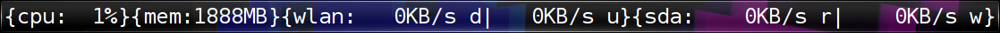
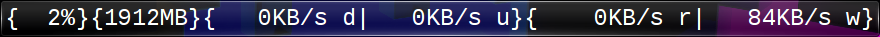
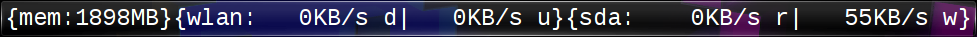
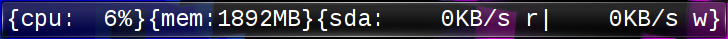
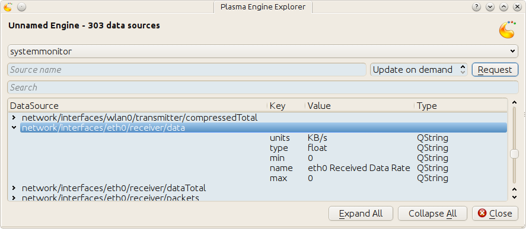
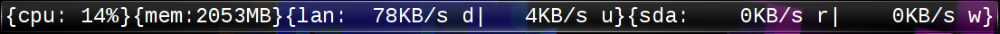

Hack your TextMon(-0.1)
Table of Contents
1 Introcdution
A number of examples on how to alter TextMon-0.1 are presented. I'll assume you know what is explained in the prelude (TODO link here).
1.1 The next thing
The actual point of TextMon is to give you an hands-on hacking entry point to writing plasma applets. While starting to document TextMon I've learned a lot new things, which aren't reflected in TextMon-0.1 . There are new TextMon and foremost much simpler flavors TextMon to come, like
- TextMonCpu
- TextMonMem
- TextMonWlan
- TextMonSda
etc. Eventually I'll come back to this original applet. The code will most like be much simper, easier to understand and alter. For the time being, this document will server the need to tweak the current TextMon-0.1.
2 Changing the font
The CSS stylesheet that defines the font appearance is located in line 10 to 13. If
// Font properties var styleSheet = { "font-family": "Liberation Mono", "font-style": "normal", "font-size": "10px", "color": "white" };
is changed to use the default monospace font and a bigger font size
// Font properties var styleSheet = { "font-family": "Monospace", "font-style": "normal", "font-size": "24px", "color": "white" };
we get

Bigger font
3 Changing value decoration
The code that arranges the labels is at the lines 141-146
for(var i in labelNames) { var name = labelNames[i] layout.addItem(separator("{" + name + ":")); layout.addItem(labels[name]); layout.addItem(separator("}")); }
If we change remove the device name
for(var i in labelNames) { var name = labelNames[i] layout.addItem(separator("{")); layout.addItem(labels[name]); layout.addItem(separator("}")); }
we'll get

Without device names
Or you do something entirely different
layout.addItem(labels.cpu); layout.addItem(separator("{")); layout.addItem(labels.mem); layout.addItem(separator("}(")); layout.addItem(labels.wlan); layout.addItem(separator(")[")); layout.addItem(labels.sda); layout.addItem(separator("]"));
Random decoration
4 Removing cpu entry
This doesn't make much sense, but I want you to know how to do it anyways.
The steps to remove either cpu or mem are analogous. We will show how it's done for cpu here.
Comment out or remove line 21:
var sourceNames = (function () { var ret = {} // ret["cpu"] = "cpu/system/TotalLoad"; ret["mem"] = "mem/physical/application"; ...
Remove "cpu" from line 35:
var labelNames = ["mem", "wlan", "sda"];
Comment out or remove line 41:
var sourceLabelMap = (function () { var ret = {}; //ret[sourceNames.cpu] = "cpu"; ret[sourceNames.mem] = "mem";
Comment out or remove line 70-74
var formatters = { // "cpu": function (data) { // var value = helpers.checkedValueStr(data["value"], '0'); // var paddedValue = helpers.padStrLeft(value, ' ', 3); // return paddedValue + data["units"]; // }, "mem": function(data) {
Comment out or remove line 164-169:
var updateLabels = function (labels, name, sourceData) { ... // // cpu // if (label === "cpu") { // var formatter = formatters[label]; // labels[label].text = formatter({ value: parseInt(sourceData["value"]), // units: sourceData["units"] }); // } // // else // mem if (label === "mem") {
The sad result

Without cpu :(
5 Removing wlan entry
The steps to remove either sda or wlan are analogous. We will show how it's done for wlan here.
Comment out or remove line 23-24
var sourceNames = (function () { var ret = {} ret["cpu"] = "cpu/system/TotalLoad"; ret["mem"] = "mem/physical/application"; // ret["wlanDown"] = "network/interfaces/wlan0/receiver/data"; // ret["wlanUp"] = "network/interfaces/wlan0/transmitter/data";
Remove "wlan" from line 35
var labelNames = ["cpu", "mem", "sda"];
Comment out or remove line 43-44
var sourceLabelMap = (function () { var ret = {}; ret[sourceNames.cpu] = "cpu"; ret[sourceNames.mem] = "mem"; // ret[sourceNames.wlanDown] = "wlan"; // ret[sourceNames.wlanUp] = "wlan";
Comment out or remove line 54-57
var dataCache = { // "wlan" : { // up: {value: "----", units: "KB/s"}, // down: {value: "----", units: "KB/s"} // }, "sda" : {
Comment out or remove line 82-95
var formatters = { ... // "wlan": function (downData, upData) { // var ret; // var value = helpers.checkedValueStr(downData["value"], '0'); // var paddedValue = helpers.padStrLeft(value, ' ', 4); // ret = paddedValue + downData["units"] + " d"; // ret += "|"; // var value = helpers.checkedValueStr(upData["value"], '0'); // var paddedValue = helpers.padStrLeft(value, ' ', 4); // ret += paddedValue + upData["units"] + " u"; // return ret; // }, "sda": function (readData, writeData) {
Comment out or remove line 192-207
var updateLabels = function (labels, name, sourceData) { ... labels[label].text = formatter(data["read"], data["write"]); } // // wlan // else if (label === "wlan") { // var data = dataCache[label]; // if (name === sourceNames.wlanDown) { // data["down"] = { value: sourceData["value"], // units: sourceData["units"] }; // } // else if (name === sourceNames.wlanUp) { // data["up"] = { value: sourceData["value"], // units: sourceData["units"] }; // } // dataCache[label] = data; // var formatter = formatters[label]; // labels[label].text = formatter(data["down"], data["up"]); // } };
The result

Without wlan
6 Monitoring eth0 instead of wlan0
Your system may have a different device names for wlan (i.e. ath0) or you
want to minitor your LAN (eth0) throughput instead. The location in
main.js to change these is line 21-28
// systemmonitor sources we're subscribing to. Found via // : $ plasmaengineexplorer var sourceNames = (function () { var ret = {} ret["cpu"] = "cpu/system/TotalLoad"; ret["mem"] = "mem/physical/application"; ret["wlanDown"] = "network/interfaces/wlan0/receiver/data"; ret["wlanUp"] = "network/interfaces/wlan0/transmitter/data"; // var sdaBase = "disk/sda_(8:0)/Rate"; ret["sdaRead"] = sdaBase + "/rblk"; ret["sdaWrite"] = sdaBase + "/wblk"; return ret; })();
Just as the comment suggest, use plasmaengineexplorer to figure out the
proper identifiers. For the down rate of the eth0 device this is

eth0
After the source names are changed
var sourceNames = (function () { ... ret["lanDown"] = "network/interfaces/eth0/receiver/data"; ret["lan0Up"] = "network/interfaces/eth0/transmitter/data"; // var sdaBase = "disk/sda_(8:0)/Rate"; ...
you simply replace ~wlan" with "lan" in
sourceLabelMapdataCacheformattersupdateLabels

lan instead of wlan
7 Two applets with different settings
Next you'll see why the plasma configuration facility makes a lot of sense, because we won't use it :P
To have two textmon applets with different configurations, we actually have to create an new applet from the existing one.
Lets say we want a flavor for the desktop rather than a panel where the font is bigger. Do
% cp $(kde4-config --localprefix)/share/apps/plasma/plasmoids/textmon ~/textmon_desktop -r cd ~/textmon_desktop
The path ~/textmon_desktop is arbitrary, copy it whatever you want to. Edit
the name of the applet in metadata.desktop
[Desktop Entry] ... Name=TextMon desktop ... X-KDE-PluginInfo-Name=textmon-desktop ...
Do your changes in main.js, test them with plasmoidviewer and install the
applet
% plasmapkg -i .
This isn't too bad, but you can clearly see why a per applet instance configuration makes a lot of sense.